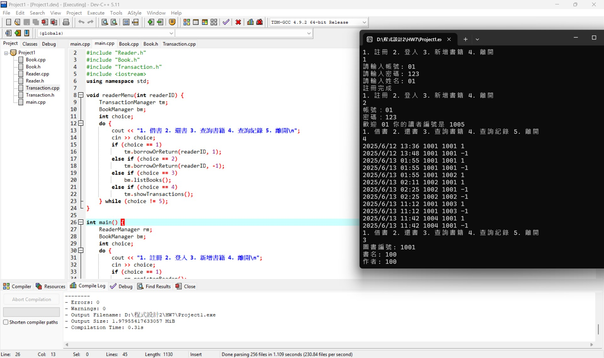
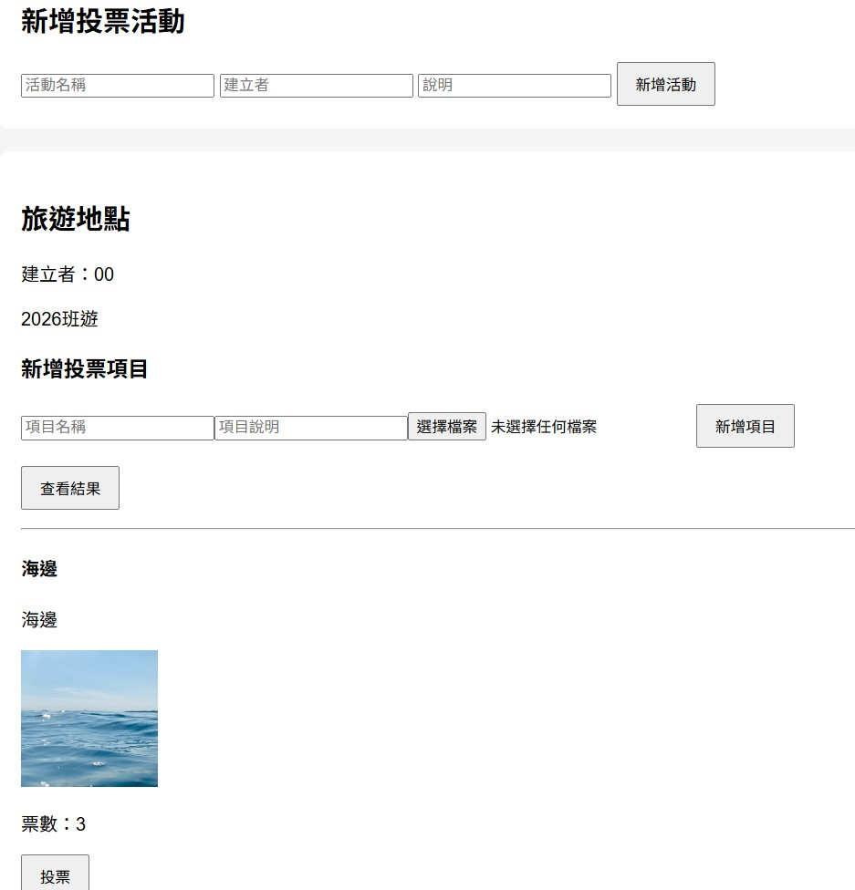
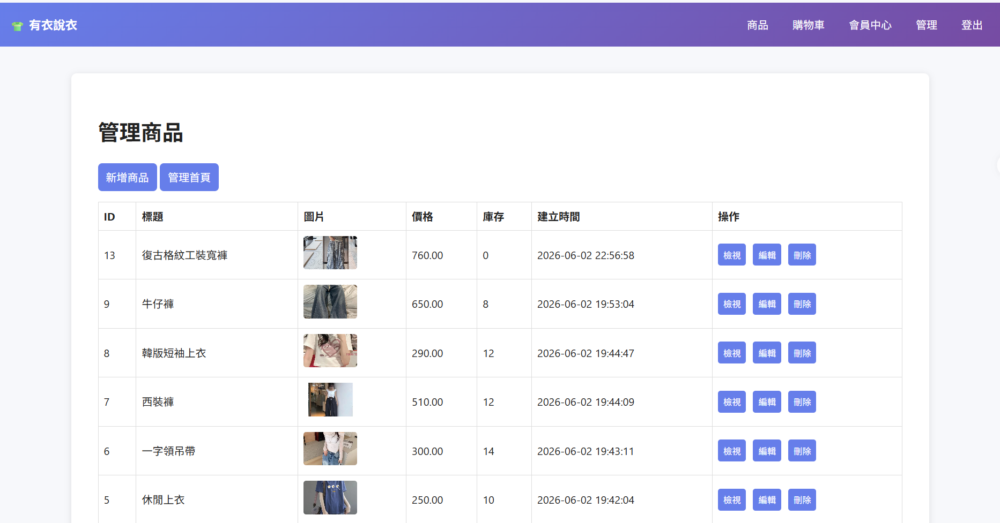

程式設計、網頁開發與資訊系統開發
透過課程專案培養程式設計、資料庫、 前後端開發等專業能力。
參與社團與志工活動，培養團隊合作、溝通協調與社會責任感。

C++ 物件導向程式設計

PHP + MySQL + Chart.js

PHP + MySQL 電商系統
生成式 AI 是一個強大的工具，它正在以前所未有的速度消除附帶複雜性，但本質複雜性——理解需求、設計架構、做出正確的工程判斷——依然是人類不可替代的領域。 真正重要的不是「用不用 AI 寫程式」，而是企業是否有能力在 AI 的協助下，重新審視架構決策、重新定義團隊角色、重新思考知識管理的方式。
閱讀更多尚未有獲獎與榮譽。
Email：U1333012@o365.nuu.edu.tw